Gradformel für den Separabilitätsgrad
1. Satz
Seien 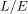, 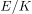 algebraische Körpererweiterungen für Körper 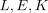. Dann gilt für den Separabilitätsgrad
2. Beweis
Sei 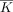 ein Algebraischer Abschluss von  und damit auch von .
Sei
und damit auch von .
Sei
für paarweise verschiedene 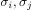 bzw. 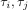.
Nach dem Fortsetzungssatz für Körpererweiterungen lässt sich 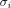 zu einem K-Automorphismus 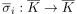, da 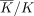 eine algebraische Körpererweiterung ist
Sei
gegeben durch
2.1. paarweise verschieden
Seien 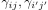 für 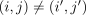 gegeben mit
Dann folgt, da 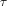 ein  -Homomorphismus und
-Homomorphismus und  ein -Homomorphismus für 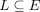 ist, auch
ein -Homomorphismus für 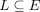 ist, auch
Damit folgt wegen

und der Annahme, dass
bzw. 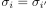 resp. 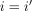. Damit folgt
und da 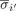 als isomorphism auch ein monomorphism ist (cf. isomorphism as monomorphism) folgt aus
auch
etwas unklar ?
2.2. andere richtung
Sei 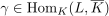.
Dann ist 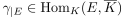, also folgt 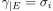 für ein 
Ferner existiert zu 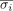 ein inverser morphismus, nämlich 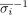